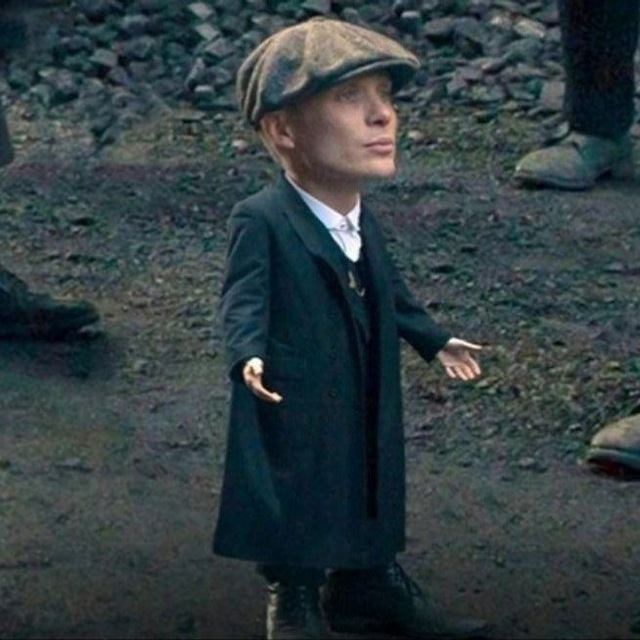
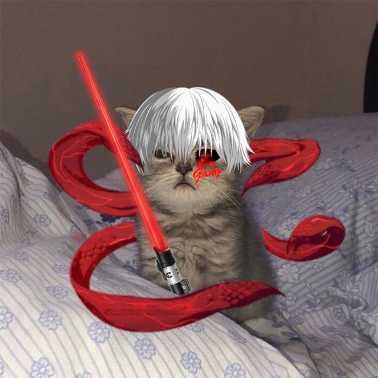

Чат Мнений
Или же сборище хохлов, москалей и чурок
Об Основании Чата Мнений
Создание чата произошло в древности, при весьма непонятных обстоятельствах, которые связывают с некой личностью, чьего имени историки не могут найти (Поговаривают, то ли Сергей, то ли Даниил).
Загадочная личность сделала несколько шагов по тропинке, над которой висело облако, проговаривает:
— Бляя, облако, облачко, вот бы из тебя вместо капель дождя падали капли говна!
— А что ты мне за это дашь? — спрашивают облако.
— В жопу!
— Отлично, идёт! — соглашается облако.
Так и появился он, чат мнений.
О Чате Мнений
Чат мнений — местообитание Homo Chatmnenius, тобишь дебилов всех мастей. Данное пространство не только место для обсуждения дебилами дебильных вопросов, но также оно служит возможностью обучаться навыкам критического мышления. Вам сразу же, с порога, скажут, что бы вы съебали отсюда нахуй. И только от вас зависит, попытаетесь ли вы воспользоваться этой прекрасной возможностью. Если да, тогда вы, возможно, еще не окончательно опустились на дно. Основные начала: Начал не будет. Перед этим вдоволь насмотритесь рекламы казино, кокосовых конфет и презервативов. Люди старались, собирали информацию, выписывали и систематизировали ее — и вот они, результаты труда, вот оно, богатство, так долго подготавливаемое трудолюбивыми руками! И неуж-то вы не отплатите, неблагодарные твари, да будет вам стыдно! Вам, что-ли, времени своего жаль? Да не ссыте, котики. Вы не платите нам, мы платим вам нашим трудом. Наслаждайтесь, короче говоря, пока вы можете. Пользуйтесь, блядь, на здоровье. Рекламу только посмотрите. Основные проблемы: 1. Женщины. 2. Ты состоишь в этом чате. 3. Ты пытаешься что-то разузнать о нем. 4. Хроническое состояние скуки. 5. Админы. 6. Лакеи, которые становятся админами. 1. Суть. Поднимите свой взор на чат мнений и посмотрите, какая нынче парадигма. Читайте сообщения оттуда и параллельно этот некий краткий отчет, который был сделан по итогам поднятия этого взора и прочтения сообщений здравомыслящими людьми. Слюной захлебывайтесь. Анализируйте, думайте, осмысляйте: Бытовал, значит, канал, именовавшийся «Анонимные опросы», уже звучит, да? Имярек, ты хочешь выразить свое мнение о том или ином вопросе? Если да, то именно этот канал тебе подойдет! Анонимный опрос – это инструмент не только для сбора информации, что бы к тебе за твое мнение изначально не могли присосаться, а после ворвались в хату за экстремизм и запустили всю мощь гомосексуализма, но и отличный способ выразить свою точку зрения. Теперь приготовьтесь к трезвому и непредвзятому общению, осознайте, кто вы на самом деле, и кто люди, среди которых вы живете. Изначально опросы были о политике, любви, сексе, семейных и бытовых проблемах, истории, философии, кулинарии и прочем, на разный вкус. Но потом, видимо, пришел кто-то умный, пощупал языком и понял, какие же каверзные эти вопросы, надо что-то придумывать. Теперь что то из разряда «Сколько раз в день вы обычно срете?», или «Какое кресло по цвету подходит к вашему белью? Есть ли в продаже гигиенические прокладки под цвет ваших трусов?», «Какой зубной пастой пользуетесь? А мылом?», «Хотели бы вы поменять свой рабочий стол на домашний?», «Какого цвета мороженое любите?», «Что из детства помните о матерной ругани?» и так далее. Вопросы, казалось бы, не особо сложные и не способны вызвать раскол в какой-либо группе, вражду и ненависть. Но даже такие вопросы люди обсуждают с большим энтузиазмом, порывом, страстью и яростью, чем политические, религиозные и военные конфликты. Думайте сами, к лучшему это или к худшему. Итак, что мы имеем: площадку, на которой десятки тысяч людей пытаются найти смысл своего существования и свой путь. Содержит много пустоты, много болтовни и эмоций, созданных для отвлечения ума и, одновременно, для того, чтобы страждущие не разбежались. Кроме того – риторика, мнения, идеи, сомнения, заблуждения, все это сопровождает людей, которые выражают свое мнение на этой площадке, создают смыслы и сопровождают этот смысл внешней деятельностью, борются за его распространение в пространстве. А вокруг этого всего генерируется много важной, но мертвой информации. Люди эту информацию потребляют, а после выражают мнение, часто не понимая того абсурда, который звучит в их словах. Абсолютно идиотские вопросы и ответы на них, идиоты, сам ход рассуждений. Понять, о чем эта площадка, нет никакой возможности. Вместо того чтобы научиться слышать свой внутренний голос, слушать дыхание мира, заниматься медитацией, человек страдает, читая высеры, расписывая свои, и в результате рождается такое вот убожество (смотреть переписку в чате мнений). Политические споры, ограничивающееся применением грубых высказываний, несбывшимися угрозами, некомпетентностью других, обменом дат и боевых картинок, незнанием базовой истории, отрицанием чужой культуры и истории. В общем, всем тем самым, чем занята жизнь в политологической среде. Сплошные невежи и невежды. И по итогу какая-то дегенеративная дрянь. А теперь разберем историю, что бы ты, ньюфаг, олдфаг или просто фаг не только понял общую картину, в какую говнищу ты угодил. Теперь ты будешь знать историю этого говнища, но без особых подробностей, ибо видишь ли, оно не заслуживает внимания, потому что это самая ничтожная часть мира. (Нет, просто лень): 1. Создание чата произошло в древности, при весьма непонятных обстоятельствах, которые связывают с некой личностью, чьего имени историки не могут найти. Загадочная личность сделала несколько шагов по тропинке, над которой висело облако, проговаривает: — Бляя, облако, облачко, вот бы из тебя вместо капель дождя падали капли говна! — А что ты мне за это дашь? — спрашивают облако. — В жопу! — Отлично, идёт! — соглашается облако. Так и появился он, чат мнений. 2. Загадочная личность сначала создала аффилированную структуру, что бы впоследствии при власти в чате мнений были исключительно долбаебы, не понимающие в предмете в силу своей ничтожности. Усиление диктатуры, массовые репрессии, геноцид, расстрелы, закрытие независимых СМИ, уничтожение почти всех видов искусства и создание антикультуры, которая по сей день развивается. Всё так безнадёжно предсказуемо: пока аморалы строчат говносрачи, мудрые гуру строят чатик. Наслаждайся! Уж как они его строят, это вопрос другой. 3. А народ то как недоволен был, что оно выразило свое недовольство и его нахуй послали. «Блять», — вопил народ. И только «блять», все остальное было под запретом. Такого безобразия свет ещё не видывал. Была попытка революции, закончившаяся баном кучи людей, после чего этот самый народ немножко поутих, но долго так продолжаться не могло. И тем не менее, главный гад ушёл! Ужаснейший, развратный, зловонный и презренный тип — Сергей, которого вы все знаете. Если не знаете — будет интересно почитать про его психотип (жаль, что всем будет лень его составлять). На место Сергея пришёл Роб. 4. Не Серега, конечно, но Роб не уступал своему предшественнику. Уже более сдержанный, как психопат полностью не раскрылся. Он пытался вернуть всё в зад — жёсткие правила, единовластие, личный комфорт, армию рабов и всякое такое — и тем самым построил одну из самых худших, но интересных модель сосуществования. Некоторые ругают его за это. Ругать его можно еще за занудство, уныние и бардак. И его свергнули. (Подробнее про революцию можно почитать в статье про Хахатунчиков. Остерегайтесь усердного вылизывания и хвастовства. Вас предупредили!) 5. После такого опыта админы и прочие верховные жрецы осознали, что наступать на одни и те же грабли, блять, в третий раз, пожалуй, не стоит. И задумались. Стали думать, чё делать то. Задумались, и осознали, что задача у них стоит посложнее, чем поставить очередного мутного типа на пост вождя. (Читать голосом типичного телеведущего, с ноткой большего босса мафии, слегка кукарекающего, в некоторых местах завышать голос, делая его несколько тише, а в конце делать полустон): Были проведены демократические реформы, создался парламент, избран президент и сформировано новое правительство. Ситуация изменилась к лучшему. (Следует недолгая, старательно изображающая сомнения пауза.) Но, конечно, никаких гарантий. Что теперь с нами будет? (Блюющий голос на фоне: «Ха-ха-хе-пха-мха» с ясно читаемым облегчением.) Надежда только на светлое будущее, которое наступит неизвестно когда и как… (Начинает играть классическая музыка, потом слышен звон колоколов, оркестр завывает, очень чётко выделяя скорбные ноты, которые плавно переходят в воодушевляющий марш, окончанием которого служит долгий гул, который отыгрывает явный страх перед будущим, разрастающийся в ужасе до грома. Торжественная тишина. Музыка стихла. Люди ждут реплики от ведущего, но он молчит. Каких-то слов, которые логически закончат эту картину. Нет. Тишина. Экран гаснет). 6. Ненужный Эпилог. Читать не надо. Именно эпилог, но здесь оно не как не событие, как момент, из которого складывается история. Программа кончилась. Ты со всей родней сидишь, охуевший, перед экраном и знаешь, что родился, рос и жил в зоопарке, дальше что-нибудь итак неясное станет ещё неяснее. А твой батя, для которого это представление стало настоящим шоком, сидит и ржет в рюмку водки. Тем не менее, по крайней мере, как он считает - он всё понимает. Он садится рядом с тобой, и на его лице отражаются печаль. И начинает задушевный говор. Этот батя - мыыыъъ!!!! Мы. Мы считаем, что имеем право на своем сайте слегка погундосить, поныть, поворчать, поплакать и посетовать, при этом, конечно, не объясняя чем именно мы недовольны. (Но так поступаем не только мы!) Ситуация становится все хуже и хуже, с каждым днем! Просто теперь это не настолько ярко выражено, а твоя паника приобретает какой-то невнятный оттенок, который ты не в силах объяснить. Сейчас идёт просто иллюзия. До чего же парадоксально, — одна из наиболее важных и практически реализованных программ входит в серьезное противоречие с собой, становясь постепенно не интересной и не нужной сама себе. Либо в скором времени произойдет очередной эпический пиздец, либо чатик тихо умрет. Либо наконец заживёт, стабильно и тихо функционируя в режиме "все пучком" на протяжении как минимум полугода. А потом очередной революционер доведет все до грани, когда эту статью придется переименовать в "Чат без мнений", и да воцарится там давно заслуженный хаос и анархия. Аминь! Заключение: Чат мнений хуйня.
Фракции Чата Мнений
Нажмите чтобы узнать больше о каждой фракции
Хахатунчики
Быстрая Информация
"ххт" - Хахатунчики.
Одна из крупных фракций Чата мнений.
В клан отбираются самые лучшие
участники из Чата мнений.
Их главная задача - чистить чат от
NPC и неответственных и плохих админов.
Хахатунчики единственые которые имеют свою страницу
Глава фракции: @BebrSlivov.
Гэнги
Быстра информация
"гэнг" - одна из крупных фракций.
Была создана ради веселья, нет серьезных
намерений, целей в чате и производят набор
любых участников чата.
Глава фракции:@kifigeek.
NfPd
Быстрая информация
"NfPD" - Need for Penetration of Dick.
Малоисследованы, подробной информации нет.
Глава клана: @Piskoed777 и @CaRmAn96.
Рэйд
Быстрая информация
"рейд" - рейдеры разных чатов.
Созданы с целью рейдов и веселья над
разными чатами меньшинств.
На данный момент проводят
рейды только в чатах одного
владельца.
Глава клана: @sLTm_top